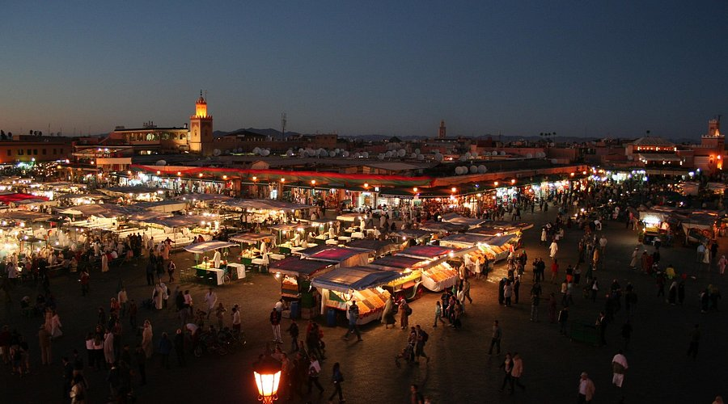
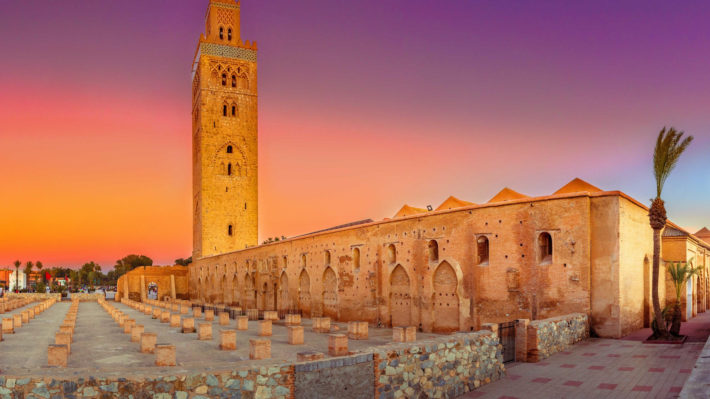
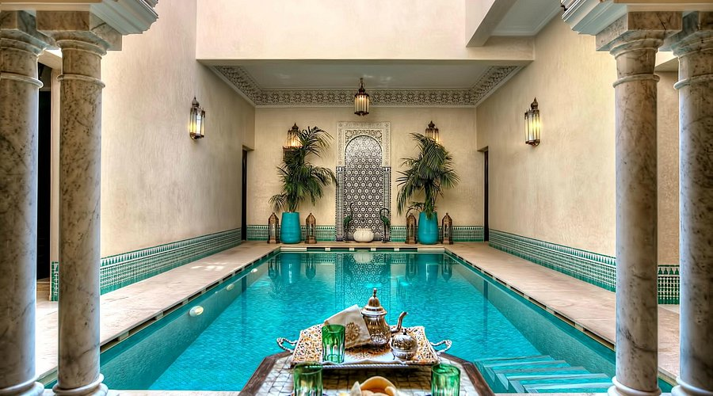

Activités touristiques
De la place Jemaa el-Fna aux jardins secrets, Marrakech regorge d'expériences inoubliables.

CulturePlace Jemaa el-Fna
Le cœur battant de Marrakech — conteurs, musiciens, charmeurs de serpents et étals de jus d'orange.
 Nature
Nature
Jardin Majorelle
Un jardin botanique somptueux aux couleurs bleu cobalt et jaune, ancienne propriété d'Yves Saint Laurent.
 Culture
Culture
Palais Bahia
Un chef-d'œuvre de l'architecture arabo-andalouse du XIXe siècle, aux zelliges et stucs éblouissants.

CultureMosquée Koutoubia
Le symbole de Marrakech — un minaret du XIIe siècle de 69 mètres, visible de presque partout dans la ville.
 Gastronomie
Gastronomie
Gastronomie marocaine
Tajines parfumés, couscous royal, pastilla au pigeon et thé à la menthe — une cuisine mille et une nuits.

Bien-êtreRiads & Spas
S'évader dans un riad aux piscines turquoise et aux jardins secrets, avec hammam et soins à l'huile d'argan.